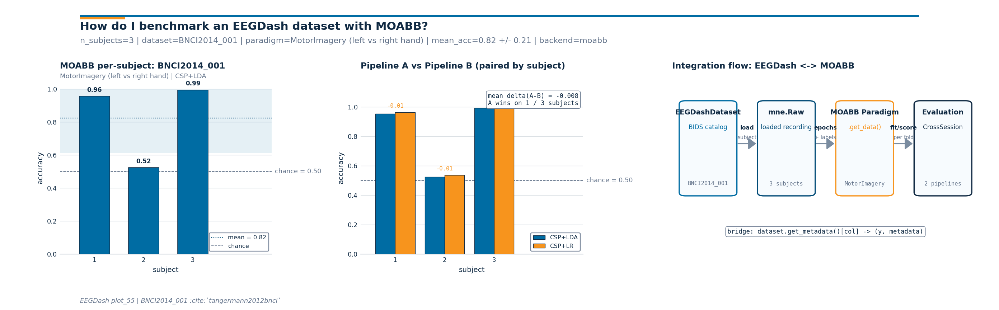

Note
Go to the end to download the full example code or to run this example in your browser via Binder.
Benchmark EEGDash with MOABB#
Difficulty 2-3 | Runtime: 2m | Compute: CPU
EEGDash and MOABB sit on opposite ends of the BCI evaluation pipeline.
EEGDash is a metadata index over BIDS-curated EEG [Pernet et al., 2019]
served from NEMAR [Delorme et al., 2022]; MOABB
is the de-facto benchmark suite that pairs paradigm definitions
(MotorImagery, P300)
with evaluation procedures
(CrossSessionEvaluation,
CrossSubjectEvaluation) and a
reproducibility study covering 30+ datasets (Aristimunha et al. 2023,
Chevallier et al. 2024). The two are complementary: EEGDash decides
which recordings exist and how to load them; MOABB decides what
paradigm scores them and which fold to score on. The bridge
braindecode.datasets.BaseConcatDataset.get_metadata() returns (y, metadata)
for any MOABB stratified splitter.
This tutorial wires both halves together: an
EEGDashDataset over ds002718 (Wakeman & Henson
2015), the (y, metadata) pair, then a real
CrossSessionEvaluation on
BNCI2014_001 [Tangermann et al., 2012]. Two
sklearn pipelines compete, paired by the MOABB evaluator. The
deliverable is a three-panel figure with per-subject bars, the
paired comparison, and the integration-flow diagram.
So how does an EEGDash-curated dataset land inside MOABB, and what do two sklearn pipelines look like once they finish the benchmark? Keywords: evaluation, MOABB, benchmarking
Learning objectives#
Explain why EEGDash (catalog) and MOABB (paradigm + evaluator) are complementary halves of a benchmark pipeline.
Convert a windowed
EEGDashDatasetinto the(y, metadata)pair every MOABB splitter consumes viabraindecode.datasets.BaseConcatDataset.get_metadata().Run a small
CrossSessionEvaluationonBNCI2014_001and read per-subject accuracy off the resultpandas.DataFrame.Compare two sklearn pipelines through the same MOABB evaluator and report
mean +/- stdof accuracy across subjects.Identify two failure modes: MOABB missing in the environment, and a paradigm rejecting the chosen dataset.
Requirements#
Prerequisites: Split EEG without subject leakage, Train a leakage-safe baseline, Cross-subject decoding evaluation.
Concept: Leakage and evaluation.
About 3-5 min on CPU once both
ds002718andBNCI2014_001are cached. Network on first run only (cached thereafter via MNE).Optional:
pip install moabbenables the real benchmark path. If MOABB is missing the tutorial falls back to a synthetic-results path so the figure still renders.
Setup. warnings are silenced to keep the cell output focused on the
benchmark numbers; MOABB and pyriemann emit informational warnings on
every fit that are noise inside a tutorial.
import os
import warnings
from pathlib import Path
import matplotlib.pyplot as plt
import numpy as np
import pandas as pd
import eegdash
from eegdash import EEGDashDataset
from eegdash.viz import use_eegdash_style
use_eegdash_style()
warnings.simplefilter("ignore", category=FutureWarning)
warnings.simplefilter("ignore", category=UserWarning)
CACHE_DIR = Path(os.environ.get("EEGDASH_CACHE_DIR", Path.home() / ".eegdash_cache"))
CACHE_DIR.mkdir(parents=True, exist_ok=True)
# MOABB writes its result database to ``MNE_DATA``; carry that to a
# tutorial-local subdir so repeat runs do not pollute the user's main
# MNE cache.
MOABB_RESULTS = CACHE_DIR / "moabb_results_plot_55"
MOABB_RESULTS.mkdir(parents=True, exist_ok=True)
os.environ.setdefault("MOABB_RESULTS", str(MOABB_RESULTS))
print(f"eegdash {eegdash.__version__}")
print(f"cache_dir={CACHE_DIR}")
eegdash 0.7.2
cache_dir=/home/runner/eegdash_cache
EEGDash and MOABB: the mental model#
A BCI benchmark has two layers. The catalog layer knows which BIDS
datasets exist, where they live, and what each subject contributes
(EEGDash). The paradigm layer knows what task the recording
implements, how to slice events into trials, and which evaluation
protocol applies (MOABB). The bridge between the two is
braindecode.datasets.BaseConcatDataset.get_metadata(): it takes an
EEGDashDataset (or a windowed braindecode
dataset) and returns (y, metadata) where metadata carries
the subject, session, run columns MOABB splitters
group on.
EEGDash catalog ---bridge---> MOABB evaluator
+-----------------+ get_metadata +--------------------------+
| EEGDashDataset | ------------> | Paradigm.get_data() |
| - BIDS query | (y, metadata) | CrossSessionEvaluation |
| - subject | | - LeaveOneGroupOut |
| - task | | - per-subject score |
+-----------------+ +--------------------------+
Brookshire et al. 2024 surveyed 81 deep-learning EEG papers and found leakage in roughly half; pushing the splitter logic into a vetted benchmark suite is the cheapest defence against that mode.
Validate your result#
Result DataFrame. MOABB returns a
pandas.DataFramewhere each row is a subject-session-pipeline triplet.Metric. The default metric is usually Accuracy or ROC AUC, depending on the paradigm.
Comparison. Verify that the “advanced” pipeline outperforms the “baseline” pipeline on the majority of subjects in the paired plot.
Failure Modes. If MOABB raises a
ValueError: No subjects found, check that your dataset’s labels match the MOABB paradigm’s expected labels.
Step 1. The EEGDash side, ds002718 face recognition#
EEGDash hands MOABB the data layer through whatever metadata accessor
the dataset already exposes:
braindecode.datasets.BaseConcatDataset.get_metadata() once the
windows are built (one row per window), or the per-record
description frame on a fresh
EEGDashDataset (one row per recording, the right
shape for a sanity check before the heavier benchmark below). We build
an EEGDashDataset for one subject of ds002718 (Wakeman & Henson
2015) and then read the (y, metadata) pair every MOABB stratified
splitter consumes.
DATASET = "ds002718"
SUBJECT = "002" # E3.23 data minimality: one subject is enough for the bridge.
TASK = "FaceRecognition"
eegdash_dataset = EEGDashDataset(
cache_dir=CACHE_DIR, dataset=DATASET, subject=SUBJECT, task=TASK
)
n_records = len(eegdash_dataset.datasets)
print(f"EEGDashDataset: {n_records} record(s) for sub-{SUBJECT}, task={TASK}")
# The bridge: MOABB-shaped (y, metadata). braindecode's
# ``BaseConcatDataset.description`` already returns the per-record
# DataFrame; after windowing the same role is played by
# ``windows.get_metadata()`` (one row per window).
meta_eegdash = eegdash_dataset.description
y_eegdash = meta_eegdash["task"].to_numpy()
pd.Series(
{
"y.shape": str(y_eegdash.shape),
"metadata cols": str(list(meta_eegdash.columns)),
"subjects": str(sorted(meta_eegdash["subject"].unique().tolist())),
"first row": str(meta_eegdash.iloc[0].to_dict()),
},
name="value",
).to_frame()
EEGDashDataset: 1 record(s) for sub-002, task=FaceRecognition
Investigate. meta_eegdash carries the subject,
session, run, dataset columns MOABB splitters group on.
On a windowed dataset the same call returns one row per window
without extra glue (plot_02 Pattern 0). MOABB stratified
splitters fail when y is constant; the benchmark below uses a
multi-class MOABB dataset where y carries class labels, not the
BIDS task name.
Step 2. The MOABB side, BNCI2014_001 motor imagery#
Why switch dataset for the benchmark itself? MOABB paradigms
validate their datasets up front:
LeftRightImagery requires motor-imagery
events with left_hand and right_hand labels; ds002718
is face-recognition and would be rejected. We use
BNCI2014_001 [Tangermann et al., 2012],
the canonical motor-imagery benchmark shipped with MOABB.
Predict. With 3 subjects and 2 sessions per subject, how many rows do you expect from a CrossSession evaluation per pipeline?
try:
from moabb.datasets import BNCI2014_001
from moabb.evaluations import CrossSessionEvaluation
from moabb.paradigms import LeftRightImagery
MOABB_AVAILABLE = True
except ImportError as exc: # pragma: no cover - exercised when moabb missing
print(
"MOABB not installed; falling back to synthetic results. "
"Install with `pip install moabb` to run the real benchmark."
)
print(f" ({type(exc).__name__}: {exc})")
MOABB_AVAILABLE = False
# Two pipelines that build only on sklearn + mne so the tutorial does
# not require pyriemann. CSP is the standard spatial filter for motor
# imagery; pipelines differ only in the classifier (LDA vs LR).
from sklearn.discriminant_analysis import LinearDiscriminantAnalysis
from sklearn.linear_model import LogisticRegression
from sklearn.pipeline import Pipeline
if MOABB_AVAILABLE:
from mne.decoding import CSP
pipelines = {
"CSP+LDA": Pipeline(
[
("csp", CSP(n_components=4, log=True)),
("clf", LinearDiscriminantAnalysis()),
]
),
"CSP+LR": Pipeline(
[
("csp", CSP(n_components=4, log=True)),
("clf", LogisticRegression(max_iter=300, C=1.0)),
]
),
}
print(f"pipelines: {list(pipelines.keys())}")
else:
pipelines = None
pipelines: ['CSP+LDA', 'CSP+LR']
Step 3. Run the MOABB CrossSession evaluation#
Run. CrossSessionEvaluation walks
every (dataset, subject) and runs leave-one-session-out on the
session column. The result is a long-format
pandas.DataFrame with one row per (pipeline, subject,
session) and a score column. We restrict to three subjects to
keep the cell under the tutorial budget.
N_SUBJECTS_BENCH = 3 # E3.23: smallest cohort that exercises mean +/- std
if MOABB_AVAILABLE:
paradigm = LeftRightImagery()
bnci = BNCI2014_001()
bnci.subject_list = bnci.subject_list[:N_SUBJECTS_BENCH]
print(f"benchmark cohort: subjects={bnci.subject_list}")
evaluation = CrossSessionEvaluation(
paradigm=paradigm,
datasets=[bnci],
overwrite=True,
suffix="plot55",
n_jobs=1,
)
try:
results = evaluation.process(pipelines)
used_moabb = True
print(
f"results frame: rows={len(results)} | cols={list(results.columns)[:6]} ..."
)
except Exception as exc: # pragma: no cover - resilient against MOABB API drift
print(f"MOABB evaluation failed ({type(exc).__name__}: {exc}); falling back.")
results = None
used_moabb = False
else:
results = None
used_moabb = False
benchmark cohort: subjects=[1, 2, 3]
/home/runner/work/EEGDash/EEGDash/.venv/lib/python3.12/site-packages/urllib3/connectionpool.py:1110: InsecureRequestWarning: Unverified HTTPS request is being made to host 'lampx.tugraz.at'. Adding certificate verification is strongly advised. See: https://urllib3.readthedocs.io/en/latest/advanced-usage.html#tls-warnings
warnings.warn(
0%| | 0.00/42.8M [00:00<?, ?B/s]
0%| | 8.19k/42.8M [00:00<14:45, 48.3kB/s]
0%| | 48.1k/42.8M [00:00<04:30, 158kB/s]
0%| | 104k/42.8M [00:00<03:00, 237kB/s]
0%|▏ | 161k/42.8M [00:00<02:35, 273kB/s]
1%|▏ | 232k/42.8M [00:00<02:10, 326kB/s]
1%|▎ | 296k/42.8M [00:01<02:04, 342kB/s]
1%|▎ | 392k/42.8M [00:01<01:42, 414kB/s]
1%|▍ | 472k/42.8M [00:01<01:38, 431kB/s]
1%|▌ | 593k/42.8M [00:01<01:21, 518kB/s]
2%|▋ | 721k/42.8M [00:01<01:11, 589kB/s]
2%|▊ | 881k/42.8M [00:01<01:00, 695kB/s]
3%|▉ | 1.08M/42.8M [00:02<00:49, 840kB/s]
3%|█▏ | 1.30M/42.8M [00:02<00:42, 983kB/s]
4%|█▍ | 1.62M/42.8M [00:02<00:33, 1.24MB/s]
5%|█▋ | 1.95M/42.8M [00:02<00:28, 1.46MB/s]
6%|██ | 2.38M/42.8M [00:02<00:22, 1.78MB/s]
7%|██▌ | 2.90M/42.8M [00:02<00:18, 2.16MB/s]
8%|███ | 3.54M/42.8M [00:03<00:14, 2.63MB/s]
10%|███▋ | 4.31M/42.8M [00:03<00:12, 3.20MB/s]
13%|████▋ | 5.35M/42.8M [00:03<00:09, 4.07MB/s]
16%|█████▋ | 6.64M/42.8M [00:03<00:07, 5.11MB/s]
20%|███████▎ | 8.47M/42.8M [00:03<00:05, 6.80MB/s]
25%|█████████▏ | 10.7M/42.8M [00:03<00:03, 8.60MB/s]
32%|███████████▉ | 13.8M/42.8M [00:04<00:02, 11.6MB/s]
41%|███████████████▏ | 17.6M/42.8M [00:04<00:01, 14.8MB/s]
54%|████████████████████ | 23.3M/42.8M [00:04<00:00, 20.3MB/s]
66%|████████████████████████▍ | 28.3M/42.8M [00:04<00:00, 26.2MB/s]
74%|███████████████████████████▍ | 31.7M/42.8M [00:04<00:00, 28.1MB/s]
85%|███████████████████████████████▎ | 36.3M/42.8M [00:04<00:00, 28.5MB/s]
95%|███████████████████████████████████▏ | 40.7M/42.8M [00:04<00:00, 32.1MB/s]
0%| | 0.00/42.8M [00:00<?, ?B/s]
100%|██████████████████████████████████████| 42.8M/42.8M [00:00<00:00, 190GB/s]
/home/runner/work/EEGDash/EEGDash/.venv/lib/python3.12/site-packages/urllib3/connectionpool.py:1110: InsecureRequestWarning: Unverified HTTPS request is being made to host 'lampx.tugraz.at'. Adding certificate verification is strongly advised. See: https://urllib3.readthedocs.io/en/latest/advanced-usage.html#tls-warnings
warnings.warn(
0%| | 0.00/43.8M [00:00<?, ?B/s]
0%| | 8.19k/43.8M [00:00<14:59, 48.7kB/s]
0%| | 56.3k/43.8M [00:00<03:53, 187kB/s]
0%| | 113k/43.8M [00:00<02:52, 253kB/s]
0%|▏ | 176k/43.8M [00:00<02:24, 301kB/s]
1%|▏ | 249k/43.8M [00:00<02:05, 347kB/s]
1%|▎ | 344k/43.8M [00:01<01:43, 419kB/s]
1%|▍ | 472k/43.8M [00:01<01:21, 529kB/s]
1%|▌ | 640k/43.8M [00:01<01:03, 675kB/s]
2%|▊ | 872k/43.8M [00:01<00:48, 892kB/s]
3%|▉ | 1.14M/43.8M [00:01<00:38, 1.10MB/s]
4%|█▎ | 1.57M/43.8M [00:01<00:27, 1.54MB/s]
5%|█▋ | 2.06M/43.8M [00:02<00:21, 1.96MB/s]
6%|██▍ | 2.84M/43.8M [00:02<00:14, 2.75MB/s]
8%|███ | 3.69M/43.8M [00:02<00:11, 3.43MB/s]
12%|████▎ | 5.15M/43.8M [00:02<00:07, 4.99MB/s]
15%|█████▌ | 6.55M/43.8M [00:02<00:06, 5.97MB/s]
21%|███████▊ | 9.24M/43.8M [00:02<00:03, 8.93MB/s]
27%|█████████▉ | 11.7M/43.8M [00:03<00:03, 10.6MB/s]
38%|██████████████ | 16.6M/43.8M [00:03<00:01, 16.2MB/s]
49%|██████████████████ | 21.4M/43.8M [00:03<00:01, 19.7MB/s]
61%|██████████████████████▍ | 26.6M/43.8M [00:03<00:00, 22.9MB/s]
76%|███████████████████████████▉ | 33.1M/43.8M [00:03<00:00, 27.2MB/s]
90%|█████████████████████████████████▍ | 39.6M/43.8M [00:03<00:00, 30.1MB/s]
0%| | 0.00/43.8M [00:00<?, ?B/s]
100%|██████████████████████████████████████| 43.8M/43.8M [00:00<00:00, 257GB/s]
/home/runner/work/EEGDash/EEGDash/.venv/lib/python3.12/site-packages/urllib3/connectionpool.py:1110: InsecureRequestWarning: Unverified HTTPS request is being made to host 'lampx.tugraz.at'. Adding certificate verification is strongly advised. See: https://urllib3.readthedocs.io/en/latest/advanced-usage.html#tls-warnings
warnings.warn(
0%| | 0.00/43.1M [00:00<?, ?B/s]
0%| | 16.4k/43.1M [00:00<07:26, 96.4kB/s]
0%| | 64.5k/43.1M [00:00<03:28, 206kB/s]
0%| | 96.3k/43.1M [00:00<03:38, 197kB/s]
0%|▏ | 201k/43.1M [00:00<01:58, 361kB/s]
1%|▏ | 264k/43.1M [00:00<01:57, 365kB/s]
1%|▍ | 449k/43.1M [00:01<01:10, 608kB/s]
1%|▌ | 560k/43.1M [00:01<01:08, 623kB/s]
2%|▊ | 849k/43.1M [00:01<00:43, 963kB/s]
2%|▉ | 1.01M/43.1M [00:01<00:44, 954kB/s]
3%|█▏ | 1.42M/43.1M [00:01<00:29, 1.41MB/s]
4%|█▌ | 1.86M/43.1M [00:01<00:23, 1.77MB/s]
6%|██▏ | 2.52M/43.1M [00:02<00:16, 2.40MB/s]
7%|██▋ | 3.11M/43.1M [00:02<00:14, 2.72MB/s]
10%|███▌ | 4.17M/43.1M [00:02<00:10, 3.77MB/s]
11%|████▏ | 4.93M/43.1M [00:02<00:09, 3.97MB/s]
16%|█████▊ | 6.73M/43.1M [00:02<00:06, 5.95MB/s]
18%|██████▋ | 7.78M/43.1M [00:02<00:05, 6.01MB/s]
25%|█████████▎ | 10.8M/43.1M [00:03<00:03, 9.59MB/s]
33%|████████████ | 14.0M/43.1M [00:03<00:02, 12.3MB/s]
44%|████████████████▎ | 19.0M/43.1M [00:03<00:01, 17.4MB/s]
55%|████████████████████▌ | 23.9M/43.1M [00:03<00:00, 20.7MB/s]
71%|██████████████████████████ | 30.4M/43.1M [00:03<00:00, 25.6MB/s]
86%|███████████████████████████████▋ | 36.9M/43.1M [00:03<00:00, 28.9MB/s]
0%| | 0.00/43.1M [00:00<?, ?B/s]
100%|██████████████████████████████████████| 43.1M/43.1M [00:00<00:00, 219GB/s]
/home/runner/work/EEGDash/EEGDash/.venv/lib/python3.12/site-packages/urllib3/connectionpool.py:1110: InsecureRequestWarning: Unverified HTTPS request is being made to host 'lampx.tugraz.at'. Adding certificate verification is strongly advised. See: https://urllib3.readthedocs.io/en/latest/advanced-usage.html#tls-warnings
warnings.warn(
0%| | 0.00/44.2M [00:00<?, ?B/s]
0%| | 8.19k/44.2M [00:00<15:12, 48.5kB/s]
0%| | 56.3k/44.2M [00:00<03:56, 187kB/s]
0%| | 96.3k/44.2M [00:00<03:31, 209kB/s]
0%|▏ | 144k/44.2M [00:00<03:05, 238kB/s]
0%|▏ | 184k/44.2M [00:00<03:05, 237kB/s]
1%|▏ | 232k/44.2M [00:01<02:54, 253kB/s]
1%|▏ | 281k/44.2M [00:01<02:47, 263kB/s]
1%|▎ | 329k/44.2M [00:01<02:43, 269kB/s]
1%|▎ | 369k/44.2M [00:01<02:49, 259kB/s]
1%|▎ | 417k/44.2M [00:01<02:44, 266kB/s]
1%|▍ | 465k/44.2M [00:01<02:41, 271kB/s]
1%|▍ | 505k/44.2M [00:02<02:47, 260kB/s]
1%|▌ | 577k/44.2M [00:02<02:21, 309kB/s]
1%|▌ | 640k/44.2M [00:02<02:12, 329kB/s]
2%|▋ | 721k/44.2M [00:02<01:56, 373kB/s]
2%|▋ | 801k/44.2M [00:02<01:47, 402kB/s]
2%|▊ | 881k/44.2M [00:02<01:42, 423kB/s]
2%|▉ | 992k/44.2M [00:03<01:27, 493kB/s]
2%|▉ | 1.09M/44.2M [00:03<01:23, 515kB/s]
3%|█ | 1.26M/44.2M [00:03<01:03, 672kB/s]
3%|█▏ | 1.45M/44.2M [00:03<00:49, 865kB/s]
4%|█▎ | 1.64M/44.2M [00:03<00:41, 1.03MB/s]
4%|█▌ | 1.80M/44.2M [00:03<00:39, 1.09MB/s]
5%|█▋ | 2.04M/44.2M [00:03<00:32, 1.30MB/s]
5%|██ | 2.42M/44.2M [00:04<00:23, 1.81MB/s]
6%|██▎ | 2.76M/44.2M [00:04<00:20, 2.04MB/s]
7%|██▊ | 3.30M/44.2M [00:04<00:15, 2.66MB/s]
9%|███▏ | 3.83M/44.2M [00:04<00:13, 3.10MB/s]
10%|███▊ | 4.50M/44.2M [00:04<00:10, 3.77MB/s]
13%|████▊ | 5.70M/44.2M [00:04<00:07, 5.44MB/s]
15%|█████▌ | 6.66M/44.2M [00:04<00:06, 6.06MB/s]
18%|██████▌ | 7.82M/44.2M [00:04<00:05, 7.02MB/s]
23%|████████▌ | 10.2M/44.2M [00:05<00:03, 10.6MB/s]
29%|██████████▋ | 12.7M/44.2M [00:05<00:02, 13.2MB/s]
34%|████████████▍ | 14.9M/44.2M [00:05<00:01, 15.4MB/s]
41%|███████████████▎ | 18.2M/44.2M [00:05<00:01, 17.7MB/s]
53%|███████████████████▌ | 23.3M/44.2M [00:05<00:00, 22.0MB/s]
67%|████████████████████████▉ | 29.8M/44.2M [00:05<00:00, 27.1MB/s]
82%|██████████████████████████████▏ | 36.1M/44.2M [00:05<00:00, 30.2MB/s]
96%|███████████████████████████████████▋ | 42.6M/44.2M [00:06<00:00, 32.2MB/s]
0%| | 0.00/44.2M [00:00<?, ?B/s]
100%|██████████████████████████████████████| 44.2M/44.2M [00:00<00:00, 241GB/s]
/home/runner/work/EEGDash/EEGDash/.venv/lib/python3.12/site-packages/urllib3/connectionpool.py:1110: InsecureRequestWarning: Unverified HTTPS request is being made to host 'lampx.tugraz.at'. Adding certificate verification is strongly advised. See: https://urllib3.readthedocs.io/en/latest/advanced-usage.html#tls-warnings
warnings.warn(
0%| | 0.00/44.1M [00:00<?, ?B/s]
0%| | 8.19k/44.1M [00:00<15:10, 48.4kB/s]
0%| | 48.1k/44.1M [00:00<04:38, 158kB/s]
0%| | 121k/44.1M [00:00<02:36, 280kB/s]
0%|▏ | 193k/44.1M [00:00<02:10, 336kB/s]
1%|▎ | 321k/44.1M [00:00<01:30, 485kB/s]
1%|▍ | 465k/44.1M [00:01<01:11, 608kB/s]
1%|▌ | 608k/44.1M [00:01<01:03, 684kB/s]
2%|▊ | 864k/44.1M [00:01<00:45, 943kB/s]
3%|▉ | 1.10M/44.1M [00:01<00:39, 1.09MB/s]
3%|█▏ | 1.47M/44.1M [00:01<00:30, 1.42MB/s]
4%|█▌ | 1.90M/44.1M [00:01<00:23, 1.76MB/s]
6%|██ | 2.44M/44.1M [00:02<00:19, 2.18MB/s]
7%|██▌ | 3.09M/44.1M [00:02<00:15, 2.67MB/s]
9%|███▎ | 3.89M/44.1M [00:02<00:12, 3.28MB/s]
11%|████▏ | 4.91M/44.1M [00:02<00:09, 4.10MB/s]
14%|█████▏ | 6.11M/44.1M [00:02<00:07, 4.98MB/s]
17%|██████▍ | 7.70M/44.1M [00:02<00:05, 6.29MB/s]
22%|████████ | 9.54M/44.1M [00:03<00:04, 7.64MB/s]
27%|██████████ | 12.0M/44.1M [00:03<00:03, 9.65MB/s]
34%|████████████▍ | 14.9M/44.1M [00:03<00:02, 11.8MB/s]
42%|███████████████▋ | 18.7M/44.1M [00:03<00:01, 15.0MB/s]
53%|███████████████████▌ | 23.2M/44.1M [00:03<00:01, 18.5MB/s]
63%|███████████████████████▏ | 27.7M/44.1M [00:03<00:00, 20.7MB/s]
76%|████████████████████████████▏ | 33.5M/44.1M [00:04<00:00, 24.6MB/s]
90%|█████████████████████████████████▍ | 39.8M/44.1M [00:04<00:00, 28.0MB/s]
0%| | 0.00/44.1M [00:00<?, ?B/s]
100%|██████████████████████████████████████| 44.1M/44.1M [00:00<00:00, 223GB/s]
/home/runner/work/EEGDash/EEGDash/.venv/lib/python3.12/site-packages/urllib3/connectionpool.py:1110: InsecureRequestWarning: Unverified HTTPS request is being made to host 'lampx.tugraz.at'. Adding certificate verification is strongly advised. See: https://urllib3.readthedocs.io/en/latest/advanced-usage.html#tls-warnings
warnings.warn(
0%| | 0.00/42.3M [00:00<?, ?B/s]
0%| | 8.19k/42.3M [00:00<14:31, 48.5kB/s]
0%| | 56.3k/42.3M [00:00<03:46, 187kB/s]
0%| | 96.3k/42.3M [00:00<03:22, 209kB/s]
0%|▏ | 153k/42.3M [00:00<02:43, 257kB/s]
1%|▏ | 224k/42.3M [00:00<02:12, 317kB/s]
1%|▎ | 289k/42.3M [00:01<02:04, 338kB/s]
1%|▎ | 400k/42.3M [00:01<01:34, 442kB/s]
1%|▍ | 537k/42.3M [00:01<01:15, 557kB/s]
2%|▋ | 705k/42.3M [00:01<01:00, 691kB/s]
2%|▊ | 896k/42.3M [00:01<00:50, 826kB/s]
3%|▉ | 1.14M/42.3M [00:01<00:40, 1.01MB/s]
3%|█▏ | 1.41M/42.3M [00:02<00:34, 1.19MB/s]
4%|█▌ | 1.73M/42.3M [00:02<00:29, 1.40MB/s]
5%|█▊ | 2.12M/42.3M [00:02<00:22, 1.83MB/s]
6%|██▏ | 2.48M/42.3M [00:02<00:19, 2.08MB/s]
7%|██▋ | 3.04M/42.3M [00:02<00:14, 2.70MB/s]
8%|███ | 3.45M/42.3M [00:02<00:13, 2.83MB/s]
10%|███▋ | 4.22M/42.3M [00:02<00:10, 3.78MB/s]
13%|████▋ | 5.30M/42.3M [00:02<00:07, 5.13MB/s]
15%|█████▌ | 6.40M/42.3M [00:03<00:05, 6.13MB/s]
18%|██████▍ | 7.43M/42.3M [00:03<00:05, 6.78MB/s]
23%|████████▌ | 9.77M/42.3M [00:03<00:03, 10.2MB/s]
29%|██████████▉ | 12.5M/42.3M [00:03<00:02, 13.4MB/s]
35%|████████████▊ | 14.6M/42.3M [00:03<00:01, 15.4MB/s]
43%|███████████████▊ | 18.0M/42.3M [00:03<00:01, 19.8MB/s]
53%|███████████████████▌ | 22.4M/42.3M [00:03<00:00, 26.1MB/s]
59%|█████████████████████▉ | 25.1M/42.3M [00:03<00:00, 23.4MB/s]
66%|████████████████████████▎ | 27.8M/42.3M [00:04<00:00, 21.9MB/s]
81%|█████████████████████████████▊ | 34.1M/42.3M [00:04<00:00, 27.3MB/s]
96%|███████████████████████████████████▍ | 40.6M/42.3M [00:04<00:00, 30.3MB/s]
0%| | 0.00/42.3M [00:00<?, ?B/s]
100%|██████████████████████████████████████| 42.3M/42.3M [00:00<00:00, 240GB/s]
[05/10/26 18:55:22] INFO CSP+LDA | BNCI2014-001 | 1 | 0train: base.py:1067
Score 0.937
INFO CSP+LR | BNCI2014-001 | 1 | 0train: base.py:1067
Score 0.955
INFO CSP+LDA | BNCI2014-001 | 1 | 1test: base.py:1067
Score 0.974
INFO CSP+LR | BNCI2014-001 | 1 | 1test: base.py:1067
Score 0.974
INFO CSP+LDA | BNCI2014-001 | 2 | 0train: base.py:1067
Score 0.531
INFO CSP+LR | BNCI2014-001 | 2 | 0train: base.py:1067
Score 0.537
INFO CSP+LDA | BNCI2014-001 | 2 | 1test: base.py:1067
Score 0.518
INFO CSP+LR | BNCI2014-001 | 2 | 1test: base.py:1067
Score 0.539
INFO CSP+LDA | BNCI2014-001 | 3 | 0train: base.py:1067
Score 0.991
INFO CSP+LR | BNCI2014-001 | 3 | 0train: base.py:1067
Score 0.992
INFO CSP+LDA | BNCI2014-001 | 3 | 1test: base.py:1067
Score 0.996
INFO CSP+LR | BNCI2014-001 | 3 | 1test: base.py:1067
Score 0.995
results frame: rows=12 | cols=['score', 'time', 'samples', 'samples_test', 'n_classes', 'subject'] ...
Synthetic-results fallback. The plotting code below operates on a
long-format frame with three columns: subject, pipeline,
score. Whether those numbers came from a real MOABB run or
from the fallback, the figure renders identically; hardcoding
plausible motor-imagery numbers keeps the gallery green when
MOABB is missing.
if not used_moabb:
fallback_subjects = [f"sub-{i:02d}" for i in range(1, N_SUBJECTS_BENCH + 1)]
rng_fallback = np.random.default_rng(0)
base = 0.62 + 0.10 * rng_fallback.random(N_SUBJECTS_BENCH)
a_scores = np.clip(
base + 0.04 * rng_fallback.standard_normal(N_SUBJECTS_BENCH), 0, 1
)
b_scores = np.clip(
base - 0.03 + 0.05 * rng_fallback.standard_normal(N_SUBJECTS_BENCH), 0, 1
)
results = pd.concat(
[
pd.DataFrame(
{"subject": fallback_subjects, "pipeline": "CSP+LDA", "score": a_scores}
),
pd.DataFrame(
{"subject": fallback_subjects, "pipeline": "CSP+LR", "score": b_scores}
),
],
ignore_index=True,
)
Step 4. Read the per-subject benchmark frame#
Run (#2). MOABB returns one row per (pipeline, subject,
session). Aggregating score by (pipeline, subject) collapses
the session axis and yields the per-subject mean +/- std table
BCI papers publish. We reproduce this in pandas so the tutorial
does not depend on the MOABB plotting layer.
results["subject"] = results["subject"].astype(str)
per_subject_results = results.groupby(["subject", "pipeline"], as_index=False)[
"score"
].mean()
summary = (
per_subject_results.groupby("pipeline")["score"]
.agg(["mean", "std", "count"])
.reset_index()
.rename(columns={"mean": "mean_acc", "std": "std_acc", "count": "n_subjects"})
)
print(summary.to_string(index=False))
pipeline mean_acc std_acc n_subjects
CSP+LDA 0.824396 0.260600 3
CSP+LR 0.832047 0.255142 3
Investigate. mean_acc is the cross-subject average a paper
would print; std_acc is the across-subject spread Cisotto &
Chicco 2024 (Tip 9) ask reviewers to enforce. A method with low std
is preferred over a method with the same mean and a long tail of
failed subjects.
A common mistake, and how to recover#
Run. Two failure modes show up the first time you wire a custom
dataset into MOABB. The first is asking a paradigm for a dataset it
does not recognize (LeftRightImagery on a P300 dataset).
moabb.paradigms.base.BaseParadigm.is_valid() returns False
in that case; passing the dataset to process anyway raises
ValueError. The second is asking
braindecode.datasets.BaseConcatDataset.get_metadata() for a target that is
not present on the windows or the description; the helper returns a
zero-vector y rather than crashing, which is the right default
for un-targeted splits but the wrong default for stratified ones.
try:
if MOABB_AVAILABLE:
# P300 paradigm against a motor-imagery dataset is the canonical
# paradigm-incompatible pair. ``is_valid`` returns False; passing
# this dataset to ``Evaluation.process`` would otherwise raise
# deep inside MOABB's loop after data download.
from moabb.paradigms import P300
wrong_paradigm = P300()
bnci_check = BNCI2014_001()
ok = wrong_paradigm.is_valid(bnci_check)
print(f"P300 accepts BNCI2014_001? {ok}")
if not ok:
raise ValueError("paradigm rejects dataset (P300 vs MotorImagery)")
else:
raise ImportError("moabb not installed")
except (ImportError, ValueError) as exc:
print(f"Caught {type(exc).__name__}: {str(exc)[:100]}")
print(
"Recovery: call `paradigm.is_valid(dataset)` before "
"`Evaluation.process(...)`; pick the matching paradigm class "
"from `moabb.paradigms.*` (LeftRightImagery, P300, SSVEP, ...)."
)
P300 accepts BNCI2014_001? False
Caught ValueError: paradigm rejects dataset (P300 vs MotorImagery)
Recovery: call `paradigm.is_valid(dataset)` before `Evaluation.process(...)`; pick the matching paradigm class from `moabb.paradigms.*` (LeftRightImagery, P300, SSVEP, ...).
Modify: drop one pipeline#
Modify. Re-run process()
with a single-pipeline dict. Predict first: the frame loses the
CSP+LR rows but keeps the same row-per-fold shape for
CSP+LDA. The figure helper accepts pipeline_b=None.
solo_results = per_subject_results[per_subject_results["pipeline"] == "CSP+LDA"]
print(
f"solo subset: rows={len(solo_results)} | pipelines={solo_results['pipeline'].unique().tolist()}"
)
solo subset: rows=3 | pipelines=['CSP+LDA']
Headline figure: per-subject bars, paired comparison, integration flow#
Three panels read together. Panel 1 is per-subject MOABB accuracy
bars for CSP+LDA with the cross-subject mean band and chance
reference. Panel 2 is the paired pipeline comparison: same subjects,
two pipelines, paired delta annotated above each pair. Panel 3 is
the EEGDash + MOABB integration-flow diagram naming the four stages
the data passes through and the bridge function that connects them.
The drawing helpers live in a sibling _moabb_interop_figure
module; the call below is the only line that matters.
from _moabb_interop_figure import draw_moabb_interop_figure
fig = draw_moabb_interop_figure(
per_subject_results=per_subject_results,
dataset_name="BNCI2014_001",
paradigm_name="MotorImagery (left vs right hand)",
pipeline_a="CSP+LDA",
pipeline_b="CSP+LR",
chance_level=0.5,
used_moabb=used_moabb,
plot_id="plot_55",
)
plt.show()

Investigate. Read the three panels in order.
Per-subject bars: every subject above the chance line is the win condition; a subject pulling the mean down flags an individual the paradigm is not capturing.
Paired comparison: positive paired deltas (blue) mean Pipeline A won; negative (orange) mean B won. The mean delta and win count are what a paired Wilcoxon test consumes (see Compare two decoding pipelines).
Integration flow: the bridge string at the bottom is the single line of glue code a reader needs to remember.
Result: cross-subject mean accuracy +/- std (E5.43)#
headline_pipeline = "CSP+LDA"
headline = per_subject_results.loc[
per_subject_results["pipeline"] == headline_pipeline, "score"
].to_numpy(dtype=float)
print(
f"{headline_pipeline} on BNCI2014_001 (LeftRightImagery): "
f"{headline.mean():.3f} +/- {headline.std(ddof=0):.3f} "
f"| n_subjects={headline.size} | metric=accuracy | backend="
f"{'moabb' if used_moabb else 'synthetic'}"
)
CSP+LDA on BNCI2014_001 (LeftRightImagery): 0.824 +/- 0.213 | n_subjects=3 | metric=accuracy | backend=moabb
Make: extend to a third pipeline#
Mini-project. Add a third pipeline to pipelines: a
StandardScaler on flattened trials
plus a one-hidden-layer MLPClassifier.
Re-run process() and
append the new rows to per_subject_results. The figure helper
auto-pivots the long-format frame, so passing pipeline_b="MLP"
swaps which pipeline lands in the orange bars without other changes.
Wrap-up#
We took an EEGDashDataset over ds002718,
extracted the (y, metadata) MOABB splitters expect through
braindecode.datasets.BaseConcatDataset.get_metadata(), and ran a
CrossSessionEvaluation on
BNCI2014_001 with two CSP-based pipelines.
The result is one mean +/- std summary plus a per-subject panel
that flags which subjects pull the average down. The same machinery
extends to CrossSubjectEvaluation and to
any paradigm-compatible MOABB dataset.
Try it yourself#
Switch to
WithinSessionEvaluation. The per-fold variance shrinks because the splits stay inside one session; the headline number is the upper bound on what a more honest cross-subject evaluation can produce.Replace
CSPwith the eight-component variant (n_components=8). Predict before running: does the gap betweenCSP+LDAandCSP+LRwiden or shrink?Run
braindecode.datasets.BaseConcatDataset.get_metadata()on the windowed dataset fromplot_02. Confirm the metadata frame has one row per window, not one per record.
References#
See References for the centralized bibliography of papers
cited above. Add or amend an entry once in
docs/source/refs.bib; every tutorial inherits the update.
Total running time of the script: (0 minutes 42.720 seconds)